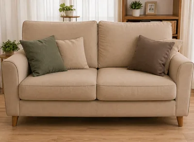
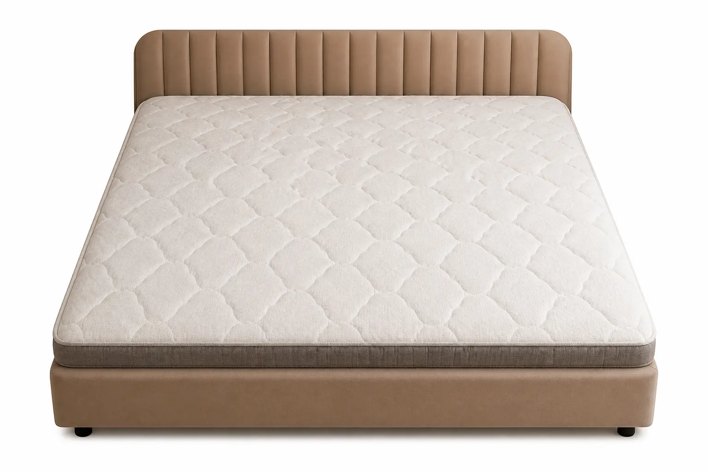
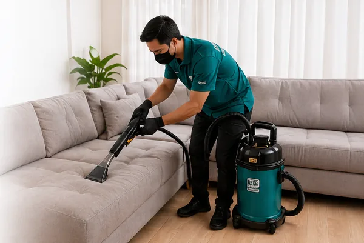
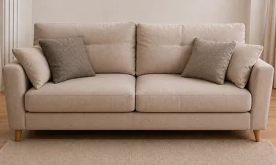
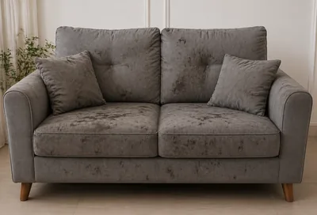
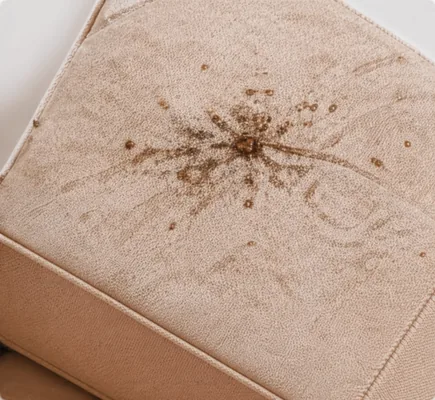
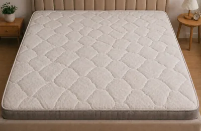

Sofa5 Cara Merawat Sofa Agar Tetap Bersih dan Awet
Sofa yang bersih tidak hanya nyaman dipandang, tapi juga sehat untuk keluarga.
Baca SelengkapnyaTemukan berbagai tips dan informasi seputar kebersihan rumah, sofa, kasur, dan perawatan lainnya dari Cleanpro.

SofaSofa yang bersih tidak hanya nyaman dipandang, tapi juga sehat untuk keluarga.
Baca Selengkapnya
KasurCuci springbed secara rutin penting untuk kualitas tidur dan kesehatan Anda.
Baca Selengkapnya
Tips & TrikGunakan cara yang tepat agar sofa tetap bersih tanpa merusak bahan.
Baca SelengkapnyaJok mobil yang bersih bikin perjalanan lebih nyaman dan bebas bakteri.
Baca Selengkapnya
Kebersihan RumahKebiasaan kecil setiap hari bisa membuat rumah lebih bersih dan sehat.
Baca Selengkapnya
SofaNoda di sofa bisa hilang dengan bahan sederhana yang ada di rumah.
Baca Selengkapnya
Tips & TrikDebu halus yang menumpuk bisa memicu gatal, bau, dan alergi.
Baca Selengkapnya
KasurKenali tanda-tanda springbed kotor agar tidur tetap berkualitas.
Baca Selengkapnya